Efficiency & Systems
Making training and inference fit the compute you actually have.
13 papers
Written by Junkun Yuan.
Click here to go back to main contents.
Table of contents ▶
Papers are displayed in reverse chronological order. High-impact or inspiring works are highlighted in red.
Distillation
AnyFlow: Any-Step Video Diffusion Model with On-Policy Flow Map Distillation
NVIDIA · National University of Singapore · MIT
European Conference on Computer Vision (ECCV), 2026
May 13, 2026 AnyFlow (27) code (440)
Distill video diffusion into a flow map between any two times, refined on-policy by flow map backward simulation: one model, any budget.
Insight. A distilled sampler should stay on the teacher's ODE: endpoint consistency re-noises its way off it and gets worse with more steps, while a two-time flow map keeps the ODE's test-time scaling, and its composition rule makes any-budget on-policy rollouts just three model calls.
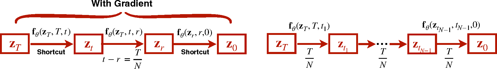
-
Flow map (§3.1, Eq. 2). The PF-ODE Eq. (1) has an exact transport , composing as ; a network learns Eq. (2) for , with . CMs are the slice, flow matching the one.
-
Why not consistency (§4.1, Fig. 1). A consistency sampler re-noises after each endpoint jump, so added steps drift off the PF-ODE instead of refining it: rCM falls 82.81 → 75.72 from 2 to 32 NFEs while the teacher climbs 62.65 → 83.41; a flow map keeps the ODE's scaling.
-
MeanFlow target without a JVP (§3.1, Eq. 3). , trained by , Eq. (3); the derivative a central difference Eq. (4), two extra forward passes, of 1,000 in the release.
-
Interpolated timestep conditioning (§4.2.1). The second time enters as , , a copy of the pretrained emb: at the model is the teacher. TMD's zero-initialized projection inflates the embedding norm and oversaturates frames (Fig. 11).
-
Time sampler and weight (§4.2.1, Fig. 10). sorted so , Wan's timestep shift 5; half the batch at , a quarter at (release); the weight beats uniform at 32 NFEs, 83.96 vs 83.75; uniform mismatches the pretraining logit-normal.
-
Guidance fused into the prediction (Eq. 6). Eq. (6) with the teacher's scale , so CFG is dropped at test time; MeanFlow fused it into the target instead. The finite difference is divided by too, so prediction and derivative share the one scale.
-
Adaptive reweighting (Eq. 7). at , else Eq. (7) with the mean boundary loss: transitions are scaled to the already-trained instantaneous field. Stage 1: 256K Wan2.1-14B synthetic clips, LoRA rank 256, 6k iterations (1.3B) or 4k (14B).
-
Flow map backward simulation (§4.2.2, Eq. 8). Composition Eq. (8) makes a rollout three calls: shortcut , target step , shortcut , all with gradient; , any budget at one cost (Tab. 5: −47% at 16 steps, +22% at 4).
-
DMD on the rollout (§3.2, Eq. 5). Re-noise at and push it by Eq. (5): the teacher at CFG 3 is the real score, a LoRA copy refit on student samples the fake, both read at ; the forward loss stays on alongside (lr , 800 iterations).
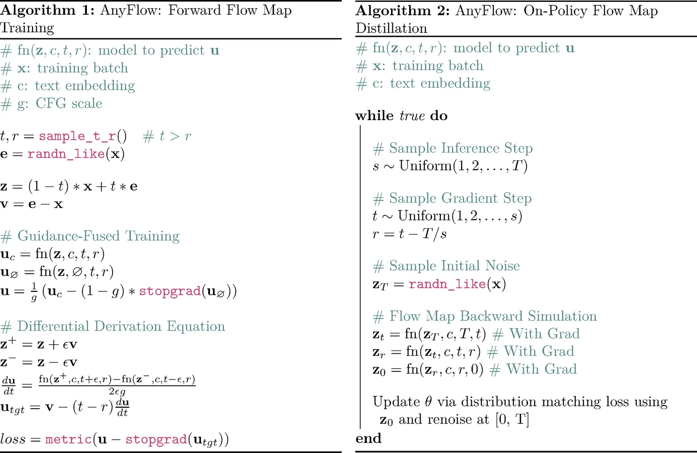
- Causal variant (§4.3). On FAR: three full chunks at kernel 2, the rest at 4; a one-frame first chunk then chunks of three serve T2V and I2V. The instantaneous field survives, so the student keeps training on new domains (robotics, driving) where Self-Forcing cannot (Fig. 7–8).
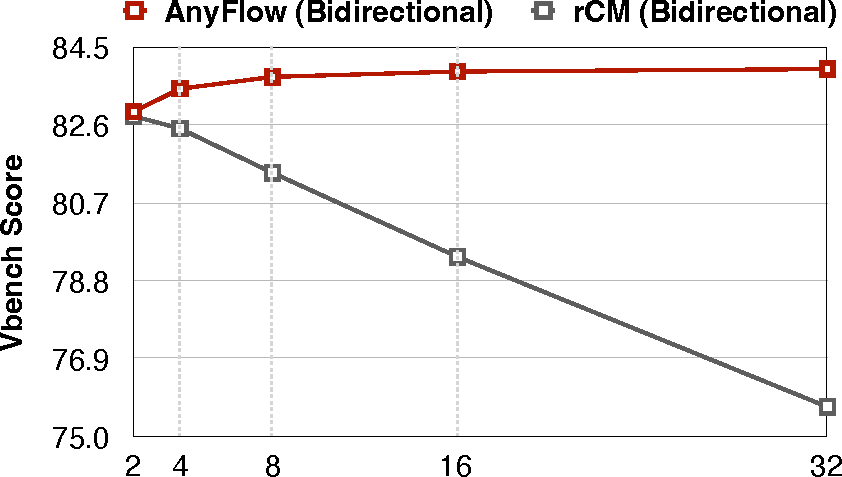
-
Experiments (§5, Tab. 2–4). VBench on Wan2.1, 480×832, 81 frames, rCM, Self-Forcing and community causal models re-run under one protocol: 1.3B bidirectional 83.48 at 4 NFEs (rCM 82.51) and 83.96 at 32; 14B 84.04 at 4 (rCM 83.73); causal FAR-14B 84.05 at 4 → 84.41 at 32 (Krea-Realtime 83.25); I2V 87.87 at 4 NFEs against Wan2.1-I2V-14B's 87.71 at 50×2, so each student beats its 50×2-step teacher.
-
The sampler matters more than the init (Tab. 2). Flow-map training under the consistency backward simulation still decays at 32 NFEs, 83.55 → 82.96, and consistency ODE-init under it collapses, 82.96 → 79.80; the flow-map simulation is the only row rising, 83.48 → 83.96.
-
Synthetic data leaves a mark (§6). Every stage trains on Wan2.1-14B samples, never the base model's data, and the paper concedes smoother textures as the visible price; the semantic score trails the quality score everywhere, 76.41 against 85.24 at 1.3B and 4 NFEs.
The training and sampling algorithm and its code. Follow Algorithm 1 and 2 of paper.
def train():
# 1. Sample the pair t > r: half the batch at t = r, a quarter at r = 0, the rest free; then Wan's shift
t, r = sort(rand(bs), rand(bs), descending=True) # Eq. (2): r = t for 50% of the batch, r = 0 for 25%
t, r = shift(t, 5), shift(r, 5) # 5t / (1 + 4t), the teacher's timestep shift
e = randn_like(x)
z = (1 - t) * x + t * e
v = e - x
# 2. Predict the average velocity with guidance fused into the prediction
u_c = model(z, c, t, r)
with no_grad():
u_n = model(z, null, t, r)
u = (u_c - (1 - 3.0) * u_n) / 3.0 # Eq. (6); g = 3, the teacher's CFG scale
# 3. du/dt by a central difference along v, no JVP
eps = 5 / 1000 # 5 of 1,000 timesteps
with no_grad():
dudt = (model(z + eps * v, c, t + eps, r) - model(z - eps * v, c, t - eps, r)) / (2 * eps * 3.0) # Eq. (4)
u_tgt = v - (t - r) * dudt # Eq. (3)
# 4. Weighted loss, transitions rescaled to the boundary loss
loss = ((u - u_tgt.detach()) ** 2).flatten(1).mean(1) * beta_weight(t) # w(t) = t (1 - t)^0.5, Beta(2, 1.5)
mu = loss[r == t].mean()
loss = where(r == t, loss, loss * mu / (loss.detach() + 1e-5)) # Eq. (7); c = 1e-5
loss = loss.mean()
def distill():
# 1. Pick a budget N and the step j that carries the gradient
N = choice([2, 4, 8, 16, 50]) # paper: s ~ U{1..T}; the release draws from this list
j = randint(0, N)
ts = cat([shift(linspace(1, 0, N + 1)[:-1], 5), [0]])
z = randn_like(x)
# 2. Flow map backward simulation: shortcut, target step, shortcut, gradient through all three
for a, b in ((ts[0], ts[j]), (ts[j], ts[j + 1]), (ts[j + 1], ts[-1])): # Eq. (8)
if a != b:
z = z - (a - b) * model(z, c, a, b)
# 3. DMD gradient on the re-noised rollout; the fake model is a LoRA copy of the teacher refit on z
with no_grad():
t = shift(rand(bs), 5)
z_t = (1 - t) * z + t * randn_like(z)
x_fake = z_t - t * fake_model(z_t, c, t, t)
x_c, x_n = z_t - t * teacher(z_t, c, t, t), z_t - t * teacher(z_t, null, t, t)
x_real = x_c + 3.0 * (x_c - x_n) # CFG as the release writes it
grad = (x_fake - x_real) / abs(z - x_real).mean() # Eq. (5), normalized as in DMD2
loss = mse(z, (z - grad).detach()) + train() # forward loss co-trained; lr 2e-6 for student and fake model
def sample():
ts = cat([shift(linspace(1, 0, N + 1)[:-1], 5), [0]]) # any N
z = randn(shape)
for t, r in zip(ts[:-1], ts[1:]):
z = z - (t - r) * model(z, c, t, r) # Euler on the flow map, no CFGTransition Matching Distillation for Fast Video Generation
NVIDIA · New York University
Conference on Computer Vision and Pattern Recognition (CVPR), 2026
Jan 14, 2026 TMD (24)
A main backbone once per transition, a recurrent flow head for cheap inner steps — a MeanFlow map pretrained, then distilled with DMD2.
Insight. A few-step student need not be monolithic: spend the big network on semantics once per transition and iterate only the last blocks, so NFEs turn fractional — and let the distribution-matching gradient flow through the unrolled inner steps, or the extra steps buy nothing on video.
-
Transition matching (§2, Eq. 1–6). On Eq. (1) flow matching predicts Eq. (2) in many small steps; TM models the jump through a latent Eq. (3), Eq. (4), with drawn by an inner flow Eq. (5) of velocity Eq. (6) from a light head on backbone features; DTM still needs ~30 steps.
-
The two tools (§2, Eq. 7–11). A flow map Eq. (7) through an average velocity obeys Eq. (8), trained by , Eq. (9–10); DMD2 matches distributions, Eq. (11) with the fake-minus-teacher score — flow maps alone struggle on video, whose Wan paths curve near , the high-noise end where a map must jump farthest.
-
Decoupled student (§3, Eq. 12, Tab. 10). The teacher's first blocks become the main backbone , its last the flow head Eq. (12) on an inner grid ; the target beats , 84.68 to 84.18.
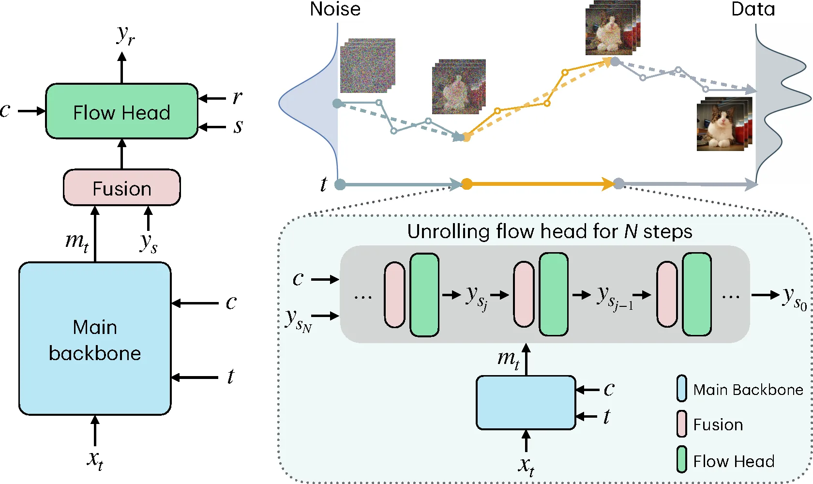
-
Gated fusion (App. A.1, Fig. 8, Tab. 9). passes through the main patch embedding and an AdaLN block on , then blends into through a learned sigmoid gate, so the student's first forward equals the teacher's; concatenation ties it, 84.76 to 84.68, but trains unstably.
-
Stage 1, TM-MF (§3.1, Eq. 13–14). Eq. (13), Eq. (14), so at the head still outputs the teacher's velocity; the MeanFlow loss takes the conditional , the backbone is not detached, and the JVP is a central difference, , as FSDP and flash attention forbid forward-mode AD, with and one-sided differences at the ends.
-
Inner clocks and knobs (App. A.2). The head grid has a shift of 10; training draws uniformly, shifts it by 3, and sets to the grid point below — discrete pairs mirroring inference, stabilizing it; 75% of batches at , CFG 3, 3k steps. Plain TM pretraining ends 0.07–0.38 lower.
-
Stage 2, DMD2-v (§3.2, Tab. 3–4). Two of three: a Conv3D discriminator head on teacher features (83.24, against 82.32 Conv1D–2D and 81.63 without GAN), and KD warm-up for one-step students only — at two steps it plants coarse artifacts DMD never removes, 83.79 vs 84.39.
-
Timestep shifting (§3.2, Tab. 5, Fig. 9). The third: on both clocks, on the DMD noise level and 10 on the student's steps (84.39 against 83.44); without the first, every video puts its subject on the left — a mode collapse VBench scores at 83.22.
-
Flow head rollout (§3.2, Eq. 15). Unroll the inner flow into a generator, Eq. (15), and pass the VSD gradient through all inner steps — backward simulation, undetached, under 17% more compute at ; without it training is slow.
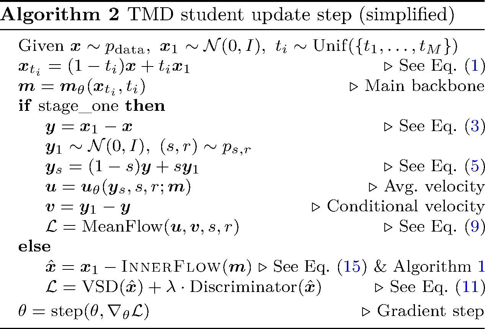
-
Effective NFE and inference (§4.1, Eq. 16–18, Alg. 1). Eq. (16): transitions of one full pass plus head passes. Sampling draws fresh per transition, runs the head times, steps ; outer steps are deterministic Eq. (18).
-
Experiments (§4, Tab. 1–2). Wan2.1 1.3B and 14B text-to-video at 480×832, 81 frames, 500k teacher clips, VBench: N2H5 at 2.33 NFE 84.68 against rCM's 84.43 at 4 NFE and DMD2-v's 84.39; at 1.17 NFE 83.80 against rCM's 82.65; on 14B 84.24 at 1.38 NFE against 83.02.
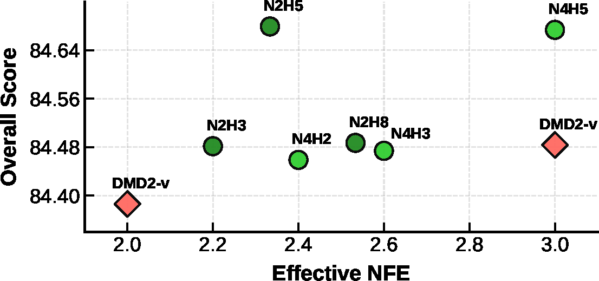
- Fractional steps pay at one outer step, not two, on 14B (Tab. 2). TMD-N4H5 at 2.75 NFE scores 84.62, under two-step rCM's 85.05 and DMD2-v's 84.79, while at the same head lifts one-step rCM's 83.02 to 84.24; on 1.3B the gain does survive at (Fig. 6).
The training and sampling algorithm and its code. Follow Algorithm 1 and 2 of paper; no release exists, so the constants are Table 7's.
def train(stage_one):
# 1. Outer transition time from the student grid, shift 10, then the noisy video and one backbone pass
t_i = choice(shift(linspace(0.999, 0, M + 1)[:-1], 10)) # t_M = 0.999 as in Wan's pretraining
x_1 = randn_like(x)
x_t = (1 - t_i) * x + t_i * x_1 # Eq. (1)
m = backbone(x_t, t_i, c) # the teacher's first L - 5 blocks, never detached
if stage_one:
# 2. TM-MF: the head learns the inner flow map of y = x_1 - x as an average velocity
y = x_1 - x # Eq. (3)
y_1 = randn_like(y)
s = shift(rand(bs), 3) # s_mf
r = where(rand(bs) < 0.75, s, grid_floor(s, shift(linspace(0.999, 0, N + 1), 10))) # r = s for 75% of the batch
y_s = (1 - s) * y + s * y_1 # Eq. (5)
v = y_1 - y # the conditional inner velocity stands in for Eq. (6)
u = y_1 - head(y_s, s, r, m) # Eq. (14)
with no_grad():
u_fn = lambda y_, s_: y_1 - head(y_, s_, r, m)
dudt = (u_fn(y_s + 0.005 * v, s + 0.005) - u_fn(y_s - 0.005 * v, s - 0.005)) / 0.01 # delta = 0.005
u_tgt = v - (s - r) * dudt # Eq. (10)
loss = (u - u_tgt).square().flatten(1).sum(1)
loss = (loss / (loss.detach() + c)).mean() # Eq. (9) normalized; c = d (1.3B) or 1e-5 d (14B)
else:
# 3. DMD2-v with flow head rollout: N inner steps, gradient through all of them
y_1 = randn_like(x); y = y_1
for s_j, s_prev in zip(grid[:-1], grid[1:]):
y = y + (s_j - s_prev) * (y_1 - head(y, s_j, s_prev, m)) # Eq. (13)-(14); Alg. 1 InnerFlow
x_hat = x_1 - y # Eq. (15); the unrolled generator g_theta
with no_grad():
t = shift(rand(bs), 5).clamp(0.001, 0.999) # t_dmd with shift 5
x_hat_t = (1 - t) * x_hat + t * randn_like(x_hat)
x_fake = fake_score(x_hat_t, t, c) # both scores parametrized as x_t - t v, Eq. (17)
x_real = teacher(x_hat_t, t, c, cfg=5)
grad = (x_fake - x_real) / abs(x_fake - x_real).mean() # App. A.3: the VSD direction over its L1 mean
loss = (x_hat * grad).mean() + 0.03 * gan_loss(disc(teacher_features(x_hat_t, t))) # Eq. (11); lambda 0.03
# the fake score and the Conv3D discriminator train on x_hat_t for 4 iterations between student updates
def sample():
x = randn(shape)
ts = shift(linspace(0.999, 0, M + 1), 10) # M outer transitions; effective NFE = M (1 + (N - 1) H / L), Eq. (16)
for t_i, t_prev in zip(ts[:-1], ts[1:]):
m = backbone(x, t_i, c) # one full pass
y_1 = randn_like(x); y = y_1
for s_j, s_prev in zip(grid[:-1], grid[1:]): # N head passes on 5 blocks
y = y + (s_j - s_prev) * (y_1 - head(y, s_j, s_prev, m)) # Eq. (13)-(14)
x = x - (t_i - t_prev) * y # Eq. (4)pi-Flow: Policy-Based Few-Step Generation via Imitation Distillation
Stanford University · Adobe Research
International Conference on Learning Representations (ICLR), 2026
Oct 16, 2025 pi-Flow (28) code (473)
A network-free policy integrates the ODE in dense substeps between the student's few calls, trained by on-policy imitation of the teacher.
Insight. Decouple network calls from integration steps: give the student a closed-form object whose rollout has the teacher's format, and distillation collapses to a squared velocity match along the student's own trajectory — no JVP, no auxiliary network, and the teacher's diversity survives.
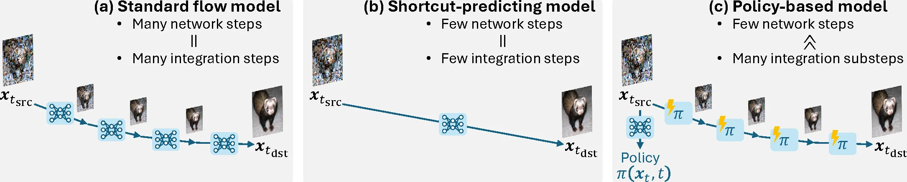
-
Flow matching ties cost to precision (§2, Eq. 1–2). With , the probability-flow ODE is Eq. (1) and fits it by , Eq. (2) — every velocity query is a network call, so accuracy and NFEs rise together.
-
Policy-based flow (§3). A trajectory is fixed by its start , so a network-free can describe it; the student emits it once and runs in 128 substeps — few network calls, dense integration, and a rollout in the teacher's own format.
-
DX policy (§3.1, Tab. 1). , the posterior mean read off a grid of predictions at even times in and linearly interpolated: any -step teacher path fits, but cannot react to a perturbed , and FID swings 4.44–4.90 with between 10 and 40.
-
GMFlow policy (§3.2, Thm. 1). The network predicts a Gaussian mixture over velocity, , one -channel mixture per pixel; components fit any -step trajectory, suffices, and the posterior adapts to : 4.44 becomes 3.07.
-
The closed-form velocity (App. F, Eq. 21–28). In units, , Eq. (21), the posterior at a later is again a mixture Eq. (23) of variance Eq. (24): with , , means Eq. (25), logits Eq. (27), and Eq. (28).
-
π-ID, on-policy imitation (§4, Alg. 1). ; draw , roll the detached policy to , add — DAgger-style: the teacher corrects states the student itself visits, error ; two states per forward.
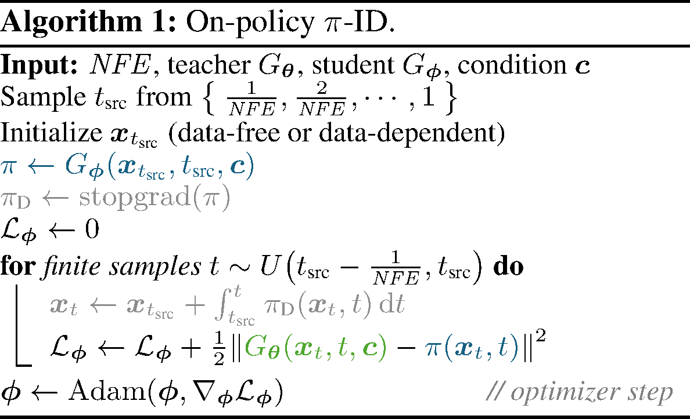
-
Data-dependent or data-free starts (Alg. 2–3, App. B.4). is real data noised at a grid time , shifted by , at 1 MP, or the detached policy's rollout from noise across all segments; same cost and FID (29.8 vs 29.7).
-
GM dropout and temperature (§5.1, App. B.1). Training drops components of at (0.1 at 1 MP), so rollouts explore new modes: 4.14 → 3.65 FID. Inference sharpens it, , variance Eq. (4), at 4 NFE, 0.7 at 8, off on the last step; ablated, 14.3 → 14.9.
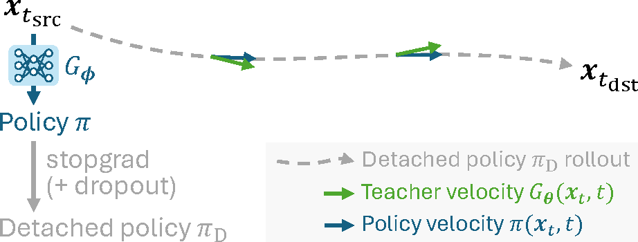
-
Micro-window matching (App. B.3, Eq. 6). The target becomes the policy's mean velocity over a window, , Eq. (6): smoother signal, a stable DX policy, and a 43-step teacher — sharper than FLUX.1 dev at 128; ablated, 14.3 → 14.6.
-
Scheduled trajectory mixing (App. B.2). FLUX.1 dev, guidance-distilled without real CFG, cannot steer stray states back; training starts off-policy on teacher rollouts, matching segment mean velocities Eq. (5), and mixes in policy segments as the teacher ratio decays to 0 in 2k.
-
Experiments (§5, Tab. 2–4). ImageNet-256 FID-50K, SiT-XL/2 teachers: 1 NFE 2.85 (REPA), 3.34 (FM) against MeanFlow's 3.43, 2 NFE 1.97; FLUX.1-12B and Qwen-Image-20B at 4 NFE: teacher-referenced FID 14.3 against SenseFlow's 23.3, OneIG diversity 0.229 vs 0.151.
-
Distribution-matching students repeat themselves (Fig. 4, Tab. 4). SenseFlow and Qwen-Image Lightning win on preference (HPSv2 0.322 vs 0.314) yet their OneIG diversity falls to 0.151 and 0.116 against the teachers' 0.238 and 0.194; pi-Flow holds 0.229 and 0.180.
-
Fewer teacher steps make sharper images (Fig. 9). FLUX.1 dev at 128 NFE renders blurrier than at 43, and a student inherits whatever its matching window implies — the window is a quality knob as much as a stabilizer, and the teacher's best sampler is not its densest.
The training and sampling algorithm and its code. Follow Algorithm 2 of paper, with the GMFlow policy of Appendix F.
def gm_velocity(x_t, t, mu_x, var_x, logweights, x_src, t_src):
# The policy: the posterior over x_0 at a later state, closed form from the mixture predicted at the start
nu = (1 - t) * x_t / t ** 2 - (1 - t_src) * x_src / t_src ** 2 # below Eq. (22)
zeta = (1 - t) ** 2 / t ** 2 - (1 - t_src) ** 2 / t_src ** 2
mu = (var_x * nu + mu_x) / (var_x * zeta + 1) # Eq. (25)
logits = logweights + (mu_x * (nu - 0.5 * zeta * mu_x)).sum(channels) / (var_x * zeta + 1) # Eq. (27)
x_0 = (softmax(logits, k) * mu).sum(k)
return (x_t - x_0) / t # Eq. (28)
def train():
# 1. Pick the segment: a grid time tau_src in {1/NFE, ..., 1} with the last step halved, then the 1 MP shift
tau_src, tau_dst = sample_segment(bs, nfe=4, final_step_scale=0.5) # Alg. 2 lines 4-5
t_src = 3.2 * tau_src / (1 + 2.2 * tau_src) # line 6; shift m = 3.2
x_src = (1 - t_src) * x_0 + t_src * randn_like(x_0) # line 7; data-free rolls the policy from noise instead
# 2. One student forward emits the policy: K = 8 Gaussians per pixel over the velocity, converted to x_0 units
means, logstds, logweights = model(x_src, t_src, c) # line 8; LoRA rank 256 on the FFNs plus a wider output layer
mu_x, var_x = x_src - t_src * means, (t_src * logstds.exp()) ** 2 # Eq. (21)
policy = GMPolicy(mu_x, var_x, logweights, x_src, t_src) # pi(x_t, t) = gm_velocity(...)
rollout = policy.detach().dropout(0.1) # line 9; GM dropout masks components to -inf and renormalizes
# 3. Two intermediate states on the detached rollout; the teacher's velocity there is the target
loss = 0
for tau in sort(tau_dst + 3 / 128 + rand(2) * (tau_src - tau_dst - 3 / 128), descending=True): # line 11
x_t, t = rollout.integrate(x_src, t_src, to=tau, substep=1 / 128) # line 13; Euler on gm_velocity
with no_grad():
u_teacher = teacher(x_t, t, c, cfg=3.5)
u_policy = policy.average_velocity(x_t, t, window=3 / 128) # Eq. (6); (x_t - x_{t-dt}) / (t - (t-dt))
loss = loss + 0.5 * (u_teacher - u_policy).square().mean() # line 14; 3k steps at batch 256, 2.3M images
def sample():
x = randn(shape)
for tau_src, tau_dst in segments(nfe=4):
t_src = 3.2 * tau_src / (1 + 2.2 * tau_src)
means, logstds, logweights = model(x, t_src, c) # one network evaluation per segment
policy = GMPolicy(x - t_src * means, (t_src * logstds.exp()) ** 2, logweights, x, t_src)
if tau_dst > 0:
policy = policy.temperature(0.3) # Eq. (4); T = 0.3 at 4 NFE, 0.7 at 8, off on the last step
x, _ = policy.integrate(x, t_src, to=tau_dst, substep=1 / 128) # 128 / NFE closed-form substeps, no networkLarge Scale Diffusion Distillation via Score-Regularized Continuous-Time Consistency
Tsinghua University · NVIDIA
International Conference on Learning Representations (ICLR), 2026
Oct 09, 2025 rCM (78) code (814)
It scales continuous-time consistency distillation to 14B video models and fixes its fine-detail failures with a score distillation regularizer.
Insight. At scale consistency alone blurs and distribution matching alone collapses; a forward, offline divergence to cover modes plus a reverse, on-policy one to sharpen them is a two-divergence default — and the quality metric alone will not show which half is failing: watch diversity too.
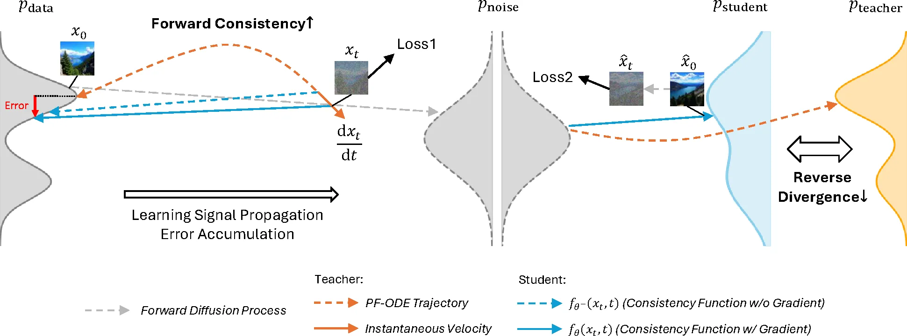
-
Any teacher, wrapped into TrigFlow (§3.1, Eq. 3). A consistency function maps any point of the teacher's trajectory to its start; on it is , so predicts velocity. For a rectified-flow teacher, solving gives a time map and the pair , , FP64, no retraining.
-
The sCM loss, stripped down (§3.1, Eq. 4). With , the tangent of the stop-gradient student along the teacher ODE, , , folded into the JVP. sCM's adaptive weighting goes — the normalized loss sits near 1 anyway — and so do its Fourier-embedding and AdaGN fixes: these DiTs keep positional time embedding, AdaLN and QK-norm.
-
JVP at scale (§3.2, App. C, Alg. 2). The tangent is one forward-mode pass through the whole DiT. A Triton FlashAttention-2 kernel streams the output tangent in the same tiled loop as the output, , ; every layer takes and returns tangents, so FSDP shards at layer boundaries; context parallelism all-to-alls tangents like activations — JVP training past 10B parameters, a first.
-
Where pure sCM breaks (§3.3, Eq. 5). The target expands to : the teacher's term fades as and the JVP self-feedback rules the noisy end, where BF16 leaves it a relative error near 6 against ~0 for (Fig. 11). Errors walk from small to large : easy prompts stay sharp, but small text and cross-frame object geometry distort, at 14B too (Fig. 3).
-
Score regularization (§4.1, Eq. 6). On samples re-noised to , DMD's reverse-KL gradient is a regression carrier, , both read at , a teacher copy refit on those samples (line 21).
-
One objective, two divergences (§4.1). , throughout: the forward, offline signal covers modes and blurs; the reverse, on-policy one seeks modes and sharpens — the long skip above. DMD over SiD's Fisher divergence: no edge here, less memory.
-
Rollout (§4.1, Alg. 1 lines 9–11). Sampling alternates denoise and re-noise, , , gradient through the last step only, times , — decreasing at random, so the full range is covered; DMD2 pins fixed steps.
-
Stable time derivative (§4.2). The JVP collapses late in training through , the oscillating time embedding. Semi-continuous time: exact JVP for the half, a finite difference , , for the rest — enough for 2B images. High-precision time: the full JVP with every time-embedding layer held in FP32 — what 10B+ and video need.
-
The loop (Alg. 1, App. D). Student and fake score start as the teacher with CFG 4.5 / 5 distilled in, full-parameter; one student step per critic steps (10 at 14B); no gradient clipping, called crucial. Sampling walks , trading quality for diversity.
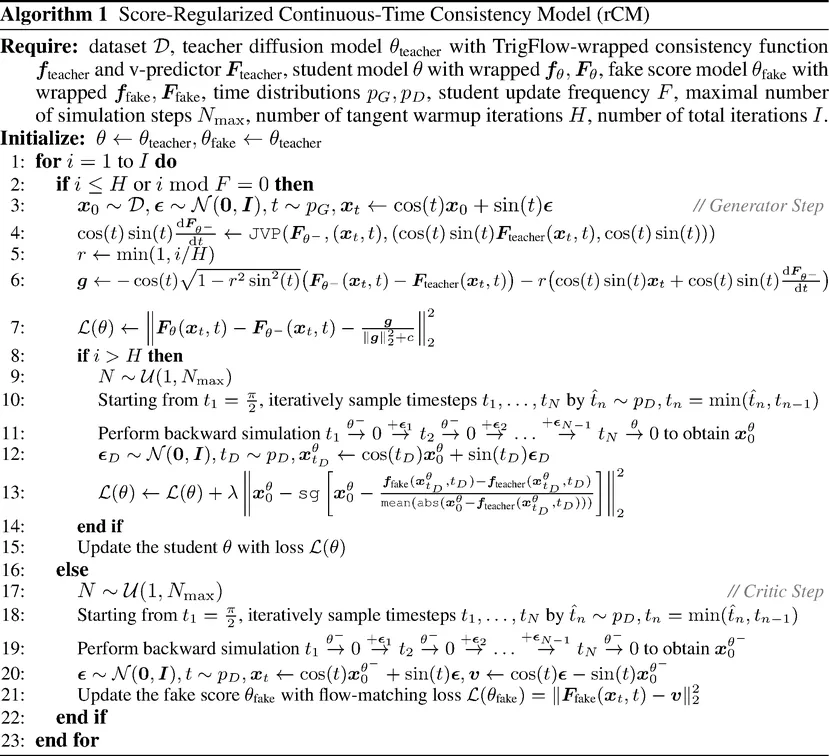
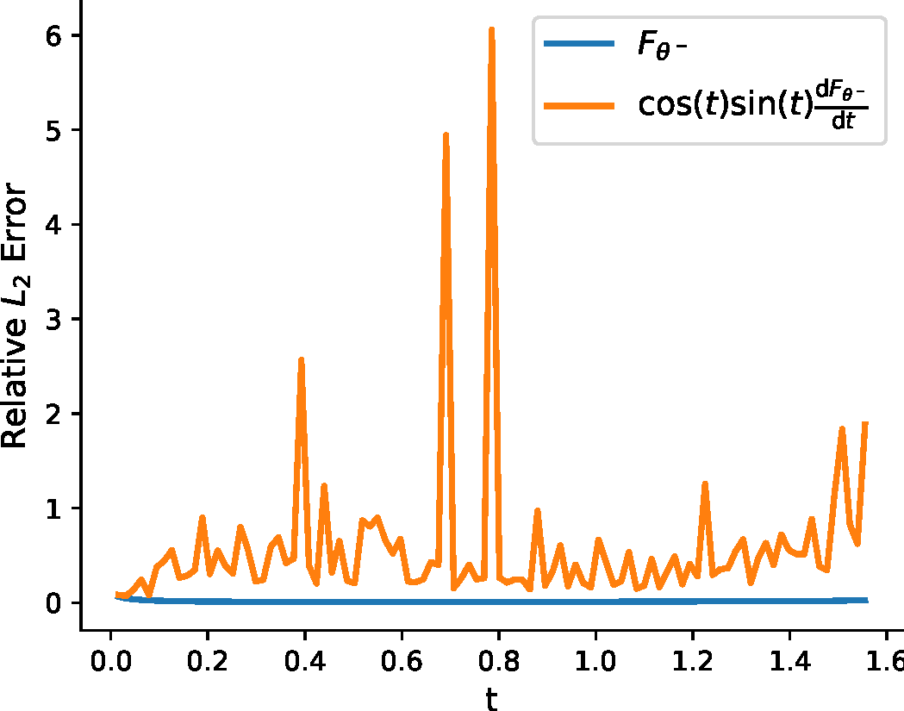
-
Experiments (§5). Cosmos-Predict2 T2I by GenEval and Wan2.1 T2V by VBench, 4 steps against 35×2 / 50×2 teachers and DMD2: GenEval 0.83 at 14B to the teacher's 0.84, VBench 84.92 to 83.58; level with DMD2 at 1.3B (84.43 vs 84.56), 15–50× faster, diversity intact.
-
The quality metric cannot see the collapse (§5.2, Fig. 7). Sweeping on Wan 1.3B moves VBench only 84.32 / 84.57 / 84.43 / 82.68 while diversity visibly falls with every step up; the sweet spot 0.01 is the smallest that still holds quality, picked by eye.
-
MeanFlow's second clock hurts distillation (App. F.1, Fig. 10). sCM with a second time , predicting jumps — MeanFlow in TrigFlow time — trails plain sCM in both quality and diversity on basic T2I: every jump along the trajectory is harder to learn than the one to .
The algorithm and its code. The release distills Wan2.1 only; t2v_model_distill_rcm.py follows Alg. 1 line by line, its departures being the quiet ones — the tangent norm, a cycled step count, the critic loss in units; the 14B config also shifts a full unit noisier than Table 4 and drops the tangent warmup to zero iterations — and its README now advises staging dCM → sCM → DMD+sCM when joint training turns unstable.
# t2v_model_distill_rcm.py, condensed. Student and fake score both load the teacher's weights;
# every F-th iteration is a student step (F = 5 at 1.3B, 10 at 14B), the rest train the fake score.
def scm_step(x0, cond, it): # Alg. 1 lines 3-7
# p_G: lognormal sigma, arctan'd into TrigFlow time; mean 0.7 at 1.3B is Tab. 4's -0.8 + log sqrt(T),
# the 14B config moves it to 1.5.
t = rf_to_trig_time(p_G.sample())
x_t = cos(t) * x0 + sin(t) * randn_like(x0)
with no_grad():
F_t = denoise("teacher", x_t, t, cond).F # CFG at scale 5 folded in: F_u + 5 * (F_c - F_u)
# Line 4, JVP rearrangement: tangents cos t sin t F_teacher and cos t sin t. fd_type=1
# swaps the time half for the finite difference of §4.2; the Wan configs keep fd_type=0.
_, dF = denoise_withT("student", (x_t, cos(t) * sin(t) * F_t), (t, cos(t) * sin(t)), cond)
F_s = denoise("student", x_t, t, cond).F; F_sg = F_s.detach()
r = min(1, it / H) # tangent warmup, line 5: H = 1000 at 1.3B, 0 at 14B (Tab. 4 says 200)
g = -cos(t) * sqrt(1 - r**2 * sin(t)**2) * (F_sg - F_t) - (r * cos(t) * sin(t) * x_t + dF)
g[isnan(g)] = 0 # a BF16 JVP that overflowed zeroes its sample instead of the run
g = g / (g.norm() + 0.1) # Eq. 4 prints ||g||^2 + c; the code divides by ||g||
return 100 * ((F_s - F_sg - g) ** 2).sum() # loss_scale 100 : loss_scale_dmd 1, lambda = 0.01
def rollout(cond, n, with_grad): # lines 10-11: t_1 = pi/2, then t_n = min(t_hat ~ p_D, t_{n-1})
x, t = randn(shape), pi / 2
for i in range(n):
with (enable_grad if with_grad and i == n - 1 else no_grad)():
x = denoise("student", x, t, cond).x0 # gradient through the final denoise only
if i < n - 1:
t = minimum(rf_to_trig_time(p_D.sample()), t); x = cos(t) * x + sin(t) * randn_like(x)
return x
def dmd_step(cond, it): # lines 9-13, Eq. 6
x0_s = rollout(cond, n=it % 4 + 1, with_grad=True) # N cycles 1, 2, 3, 4; Alg. 1 draws it
t = rf_to_trig_time(p_D.sample()); x_t = cos(t) * x0_s + sin(t) * randn_like(x0_s)
with no_grad():
x0_fake = denoise("fake", x_t, t, cond).x0; x0_teach = denoise("teacher", x_t, t, cond).x0
weight = (x0_s - x0_teach).abs().mean().clip(min=1e-5)
grad = (x0_fake - x0_teach) / weight
return ((x0_s - (x0_s - grad).detach()) ** 2).sum() # a carrier: its gradient is grad
def critic_step(cond, it): # lines 17-21
x0_s = rollout(cond, n=it % 4 + 1, with_grad=False)
t = rf_to_trig_time(p_D.sample()); x_t = cos(t) * x0_s + sin(t) * randn_like(x0_s)
x0_fake = denoise("fake", x_t, t, cond).x0
return ((x0_s - x0_fake) ** 2 / sin(t) ** 2).sum() # ||F_fake - v||^2, written in x0 unitsFrom Slow Bidirectional to Fast Autoregressive Video Diffusion Models
MIT · Adobe
Conference on Computer Vision and Pattern Recognition (CVPR), 2025
Dec 10, 2024 CausVid (450) code (1.4K)
A bidirectional teacher distilled by DMD into a block-causal four-step video student, ODE-warmed and streamed through a KV cache.
Insight. Keep the teacher strong and bidirectional and make only the student causal: distribution-level supervision crosses the attention-pattern gap, and it damps the error accumulation a causal teacher would hand down — streaming few-step video then falls out of a plain KV cache.
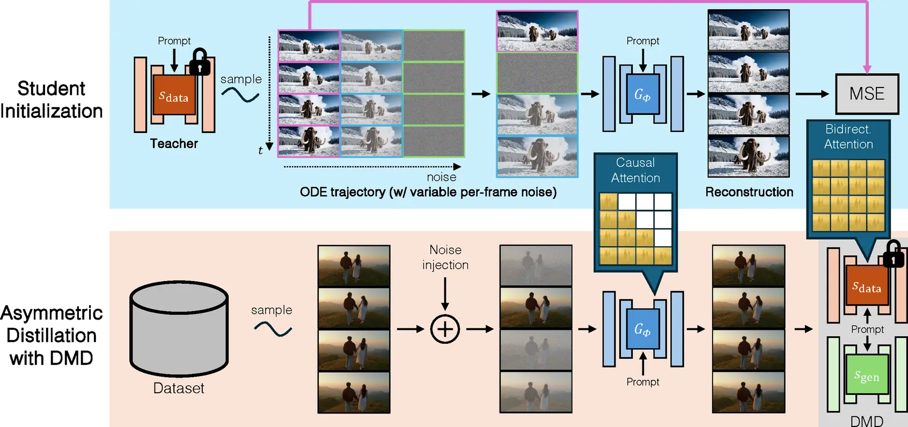
-
Diffusion and DMD recap (§3, Eq. 1–4). Eq. (1), the -loss Eq. (2), the score Eq. (3); DMD descends the reverse KL of noised generator and data, Eq. (4), trained online on generator outputs.
-
Block-causal DiT (§4.1, Eq. 5). A 3D VAE turns 16 frames into a chunk of 5 latents; attention is bidirectional inside a chunk, causal across chunks, iff Eq. (5) (the decoder needs a whole chunk anyway), and the mask drops into the pretrained DiT.
-
Asymmetric distillation (§4.2). Fine-tuning the teacher to be causal and distilling from it caps the student at a weaker model and inherits its error accumulation; so stays bidirectional and only the student is causal — DMD supervises distributions, so architectures may differ.
-
The loop (Alg. 1). Split a clip into chunks, draw per-chunk , noise each at its level, predict under the mask, re-noise at one and apply Eq. (4) with the bidirectional teacher; then takes a denoising step on re-noised , five per step.
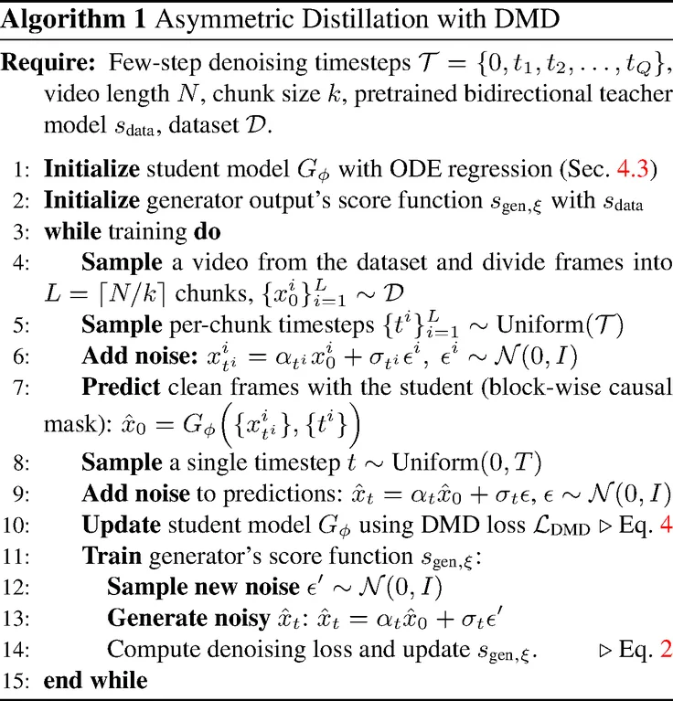
-
ODE initialization (§4.3, Eq. 6). DMD straight onto the re-masked network is unstable; so the teacher solves its ODE from a few noises and the student fits Eq. (6) from teacher weights; without it, 94.7 → 93.4 temporal and 64.4 → 60.6 frame quality.
-
KV-cached streaming (§4.4, Alg. 2). Per chunk: ; for , reads the cache, then re-noises; one forward at writes the chunk's keys and values, so no mask is needed at all, and the steps .
-
Recipe (§5). A CogVideoX-style bidirectional DiT teacher at 352×640, 12 fps, 10 s; the student identical but masked; 400K single-shot videos; CFG 3.5 on the real score, lr , 6,000 iterations, two days on 64 H100s; past 10 s a sliding window carries the last frames forward.
-
Latency (§5.1, Tab. 3). A 10 s, 120-frame video at 640×352, text encoder, DiT and VAE included: first frames after 1.3 s, then 9.4 fps, against 219.2 s and 0.6 fps for the teacher (CogVideoX-5B 208.6 s) — 160× lower latency, 16× the throughput; Pyramid Flow 6.7 s, 2.5 fps.
-
Zero-shot uses (§5.3, Tab. 5–6). Video-to-video noises each input chunk to and denoises it in one step, 93.2 / 61.7 / 27.7 vs StreamV2V's 92.5 / 59.3 / 26.9; image-to-video repeats the image as chunk one, 92.0 / 65.0 / 28.9 against CogVideoX-5B's 87.0 / 64.9 / 28.9.
-
Experiments (§5.1, Tab. 1–2). VBench temporal / frame quality / alignment on 128 MovieGen prompts: 94.7 / 64.4 / 30.1 against MovieGen's 91.5 / 61.1 / 28.8 and the teacher's 94.6 / 62.7 / 29.6; at 30 s, 94.9 / 63.4 / 28.9 vs FIFO-Diffusion's 93.1 / 57.9 / 29.9; VBench-Long 84.27.
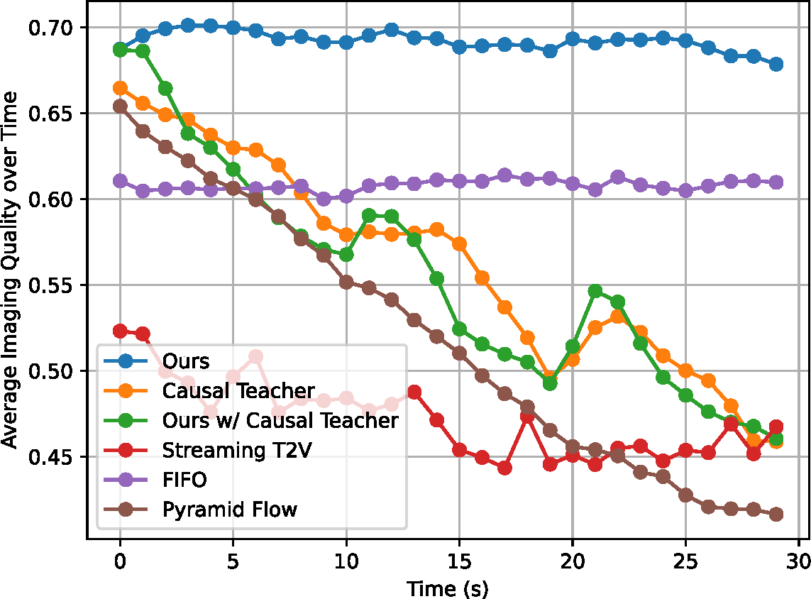
-
A causal teacher poisons its student (§5.2, Tab. 4). Same ODE start and loss: a causal teacher yields 91.9 / 61.7 / 28.2 and a student copying its decay; the bidirectional teacher yields 94.7 / 64.4 / 30.1 and a flat curve; the ODE-regressed student alone, 92.9 / 48.1 / 25.3.
-
Better frames, worse flicker and diversity (§5.2). The student beats the bidirectional teacher on frame quality, 64.4 to 62.7, yet trails it on temporal flickering and output diversity — DMD's mode-seeking shows up as flicker, a price the paper states and defers to its supplement.
The training and sampling algorithm and its code. Follow Algorithm 1 and 2 of paper; the release distills Wan2.1 with a flow-matching schedule.
def init():
# ODE regression: a trajectory point at one of the student's timesteps per block, regressed onto the teacher's x_0
t = steps[randint(4, (bs, L))].repeat_interleave(3, dim=1) # one timestep per block of 3 latent frames
x_t = ode_trajectory.gather(t) # the teacher's ODE solved from noise, 1,000 pairs
loss = mse(student(x_t, t, c)[t != 0], x_0[t != 0]) # Eq. (6); 3,000 iterations at lr 5e-6
def train():
# 1. Chunk the video and noise every chunk at its own level from the four-step list shared with sampling
steps = tensor([1000, 757, 522, 0]) # the Wan release; the paper's CogVideoX student uses [999, 748, 502, 247]
t_b = steps[randint(4, (bs, L))].repeat_interleave(3, dim=1)
x_t = (1 - t_b / 1000) * x_0 + (t_b / 1000) * randn_like(x_0) # Alg. 1 line 6; real data noised, no rollout
x_hat = student(x_t, t_b, c) # line 7; block-wise causal mask inside, x_0-parametrized
# 2. DMD gradient at one shifted noise level, teacher with CFG, fake score without, normalized as in DMD
with no_grad():
t = shift(randint(1000, (bs,)), 8).clamp(20, 980) # line 8; timestep_shift 8
x_hat_t = (1 - t / 1000) * x_hat + (t / 1000) * randn_like(x_hat) # line 9
x_fake = fake_score(x_hat_t, t, c)
x_c, x_u = teacher(x_hat_t, t, c), teacher(x_hat_t, t, null) # bidirectional attention, frozen
x_real = x_c + 3.5 * (x_c - x_u) # real_guidance_scale 3.5
grad = (x_fake - x_real) / abs(x_hat - x_real).mean(dims, keepdim=True) # Eq. (4) in x_0 predictions
loss = 0.5 * mse(x_hat.double(), (x_hat - grad).double().detach()) # line 10; its gradient is grad
# 3. Every iteration refits the fake score on fresh noisings of the student's output; the student moves every 5th
with no_grad():
x_gen = student(x_t, t_b, c)
t = shift(randint(1000, (bs,)), 8).clamp(20, 980)
eps = randn_like(x_gen)
x_gen_t = (1 - t / 1000) * x_gen + (t / 1000) * eps # line 13
flow_pred = (x_gen_t - fake_score(x_gen_t, t, c)) / (t / 1000) # x_0 prediction read as a flow
critic_loss = mse(flow_pred, eps - x_gen) # line 14; Eq. (2) in flow-matching form
def sample():
cache = [] # keys and values of every finished chunk
for i in range(L):
x = randn(chunk_shape)
for j, t in enumerate([1000, 757, 522]):
x_hat = student(x, t, c, kv_cache=cache) # Alg. 2 line 7; bidirectional kernel, the cache is the causality
if j < 2:
t_next = [757, 522][j]
x = (1 - t_next / 1000) * x_hat + (t_next / 1000) * randn_like(x_hat) # line 8, re-noise
student(x_hat, 0, c, kv_cache=cache, write=True) # lines 10-12: one pass at t = 0 appends the chunk's KV
out.append(x_hat)Improved Distribution Matching Distillation for Fast Image Synthesis
MIT · Adobe Research
Advances in Neural Information Processing Systems (NeurIPS), 2024
May 23, 2024 DMD2 (730) code (1.5K)
It frees DMD from its regression loss, adds a GAN head trained on real images, and lets a few-step student beat its own teacher.
Insight. Drop the regression leash and admit real data through a GAN head, updating the fake score several times per student step: a few-step student beats its teacher — stability comes from time-scale separation, not paired data, and few-step students should see their own outputs.
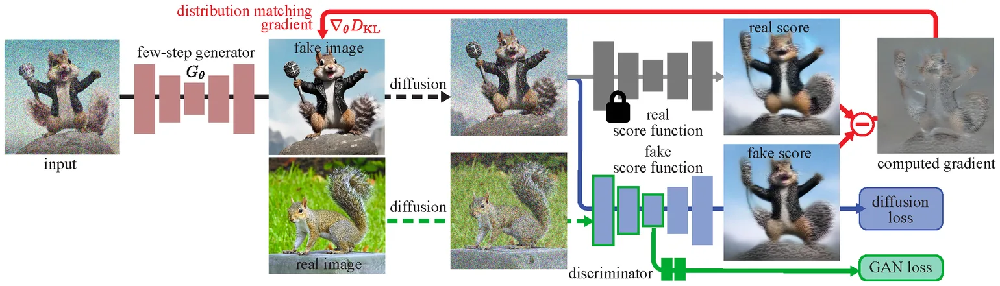
-
What the regression loss cost (§3). DMD stabilized training by regressing the student onto precomputed teacher ODE pairs: about 700 A100-days of pairs for SDXL — over 4x DMD2's training budget — and a leash to the teacher's sampling paths that caps it at teacher quality.
-
Two time-scale update rule (§4.2). Drop it naively and stability goes too — brightness oscillates — because tracks the generator's shifting output too loosely. Five fake-score updates per generator update restore DMD's ImageNet FID, 3.48 to 2.61, with no paired data.
-
A GAN head on the fake score (§4.3). What remains is the teacher's approximation error, unfixable while the student never sees real data. A classifier on 's mid-block judges noised real vs. fake (Eq. 4): 2.61 to 1.51, then 1.28 trained longer — past the teacher itself.
-
Multi-step generator (§4.4). Four timesteps, 999/749/499/249, identical at training and inference; sampling alternates denoising with re-noising. SDXL is the motivation: one step cannot carry the noise-to-megapixel map — its one-step model kept a 10K-pair warmup (App. J.4).
-
Backward simulation (§4.5). Earlier multi-step students train on noised real images, yet from step two onward inference feeds them their own outputs. DMD2 makes training inputs by running the student itself — cheap at few steps — and SDXL patch FID falls 24.21 to 20.86.
-
One loop, three players (Alg. 7). Every iteration updates the fake score and discriminator; every fifth, the generator, on matching gradient plus weighted GAN loss. Neither half suffices alone: pure GAN gets 2.56. One-step SD v1.5: COCO FID 8.35, past its 50-step teacher.
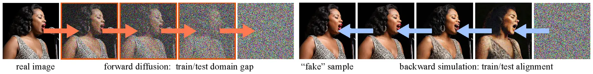
-
Experiments (§5). ImageNet-64 by FID, COCO by FID, patch FID and CLIP, distilling EDM, SD v1.5 and SDXL on 3M LAION prompts: one step 1.51 on ImageNet, past the teacher's ODE 2.22; four-step SDXL 19.32 FID / 0.332 CLIP against the teacher's 19.36 / 0.332 at 100 steps.
-
Pure GAN wins FID and loses the picture (Tab. 4). Without distribution matching, SDXL FID is the lowest, 13.77, and CLIP the worst, 0.307: the real distribution is matched while alignment and aesthetics go, and CFG cannot be taken — why patch FID and raters carry the claim.
Fast High-Resolution Image Synthesis with Latent Adversarial Diffusion Distillation
Stability AI
SIGGRAPH Asia, 2024
Mar 18, 2024 LADD (323)
Distillation goes fully latent — the teacher generates the data, its features judge real from fake, and the distillation loss goes obsolete.
Insight. Stay in latent space and let the teacher judge: on teacher-generated data the distillation loss turns redundant, adversarial loss suffices.
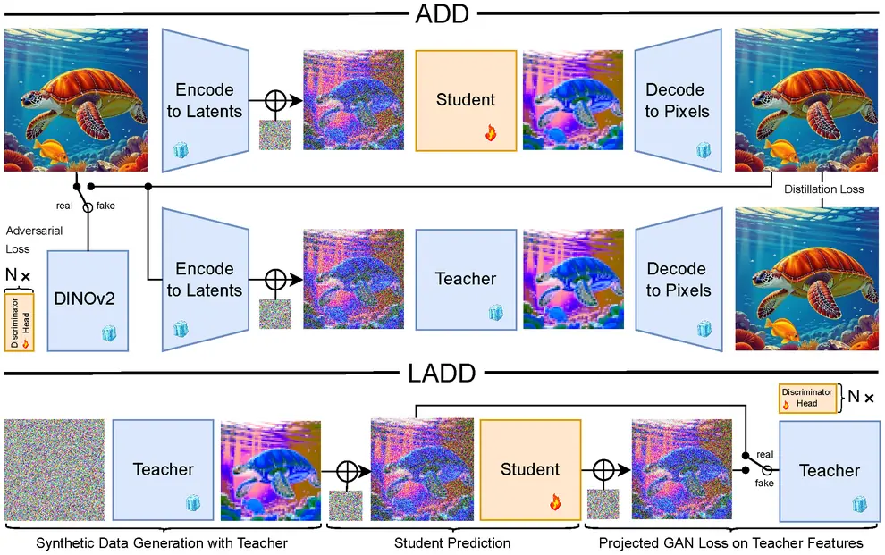
-
What ADD paid for pixels (§3). ADD decodes latents to images for both of its losses — a DINOv2 discriminator and a pixel-space distillation term — which costs memory and caps resolution. LADD never leaves latent space, and megapixel multi-aspect synthesis follows.
-
The teacher becomes the discriminator (§3). Generated latents are re-noised at a logit-normal and fed through the frozen teacher; discriminator heads sit on the token sequence after every attention block of the teacher itself, conditioned on noise level and CLIP text.
-
Synthetic data retires the distillation loss (§4.2). Training images come from the teacher at one fixed CFG scale, so image-text alignment is uniformly high; on them an added distillation term — which still helps real data — buys nothing, and the adversarial loss alone suffices.
-
Scaling, then the product (§4–5). In the three-way scaling study the student's size matters most; LADD distills the 8B MMDiT into SD3-Turbo — megapixel multi-aspect images in four unguided steps that match state-of-the-art text-to-image models, with DPO layered on top.
-
Experiments (§4–5). Ablations on a 2B MMDiT by CLIP on DrawBench and PartiPrompts; 8B SD3-Turbo by raters: one step beats every baseline on both axes, four steps ties 50-step SD3 on quality, beats Midjourney v6 on alignment; inpainting 9.44 FID to the teacher's 8.94.
-
Consistency distillation is the volatile one (§4.3). On the same student, LCM needed a grid over skipping step, schedule, full vs. LoRA tuning and checkpoint; LADD trained once, took the last, and won by a wide margin — the paper concedes it may have missed LCM's settings.
One-step Diffusion with Distribution Matching Distillation
MIT · Adobe Research
Conference on Computer Vision and Pattern Recognition (CVPR), 2024
Nov 30, 2023 DMD (1,131)
It first brought score-difference distribution matching into the diffusion distillation pipeline — a design since widely adopted across the industry's fast generators.
It distills a diffusion model into a one-step generator by matching distributions, not trajectories — the signal is a difference of two scores.
Insight. Match distributions, not trajectories: a difference of two scores frees the student from the teacher's sampling path — the move behind the fast industrial generators built since, with its mode-dropping fixed points, its weighting and its extra score network all still being tuned away.
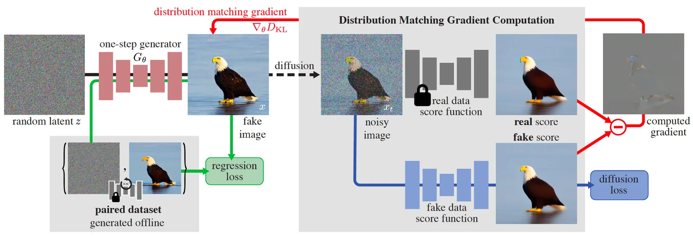
-
One-step generator (§3.1). The teacher predicts a clean image from one noised to step of . Copy its weights, drop the time input, pin it at the noisiest step: . Untrained it outputs a washed-out average, yet already maps noise to image.
-
Distribution matching objective (Eq. 1). Match the two image distributions, not the teacher's noise→image mapping: . Reverse KL, so mode-seeking — a bill paid later. Ablated: 2.62 → 9.21.
-
The gradient is what trains (Eq. 2). Densities are intractable, the gradient is not — a difference of scores : . Borrowed from ProlificDreamer, which optimizes one output at a time; DMD trains a generator.
-
Diffusing before scoring (Eq. 3). Neither score exists where the two distributions miss each other, so the generator's output is re-noised on the teacher's own schedule, , at a random . This is why both scores below take as an argument.
-
Frozen real score (Eq. 4). The teacher, frozen and read as a score: — the prediction minus the input, scaled, because a trained denoiser is a score estimator. It never moves, so is whatever the teacher learned, whose ceiling is DMD's.
-
Learned fake score (Eq. 5–6). The same formula over a second copy , retrained continually on the generator's own output by plain denoising, tracking a distribution that moves as the generator learns. GAN-like, two nets chasing — but no discriminator, no minimax.
-
Gradient weighting (Eq. 8). Scales that gradient so its magnitude is comparable across noise levels, using the teacher's own error on the sample. It reads like a footnote and is worth ~1 FID: DreamFusion's and ProlificDreamer's weightings give 3.60 / 3.71 on CIFAR-10, against 2.66.
-
Regression loss (Eq. 9). LPIPS against noise–image pairs sampled from the teacher's ODE solver, at under 1% of the compute. Needed because a score ignores rescaling of : mode dropping is a fixed point, not an instability. Ablated: 2.62 → 5.61; DMD2 drops it.
-
Alternating update (Alg. 1). on , unpaired samples for the first and paired for the second; on denoising, one update each per step. Three networks resident at once — the memory limit the paper names, and which it suggests LoRA could one day relieve.
-
Classifier-free guidance (§3.4). Pairs and come from the guided teacher, is left alone; the scale is baked in: no CFG knob.
-
Experiments (§4). ImageNet-64 and CIFAR-10 by FID, MS COCO-30K by FID and CLIP after distilling SD v1.5 on LAION-Aesthetics: one step reads 2.62 on ImageNet, within 0.3 of the 512-step EDM teacher, and 11.49 on COCO against SD's 8.78 — 0.09s an image, 30× faster.
-
The high-guidance model is the honest one (§4.3, Tab. 4). The COCO table runs at CFG 3, the scale that minimizes the teacher's FID; a second model distilled at scale 8 reads 14.93 against the teacher's 13.45, a narrower gap, and beats every 4-step solver and LCM-LoRA.
The algorithms and their code. DMD was never released, so this is
DMD2's edm_guidance.py, condensed — but the distribution-matching core is untouched:
is Algorithm 2 exactly.
DMD2's GAN loss and its 5:1 update rule both live elsewhere in the same file.
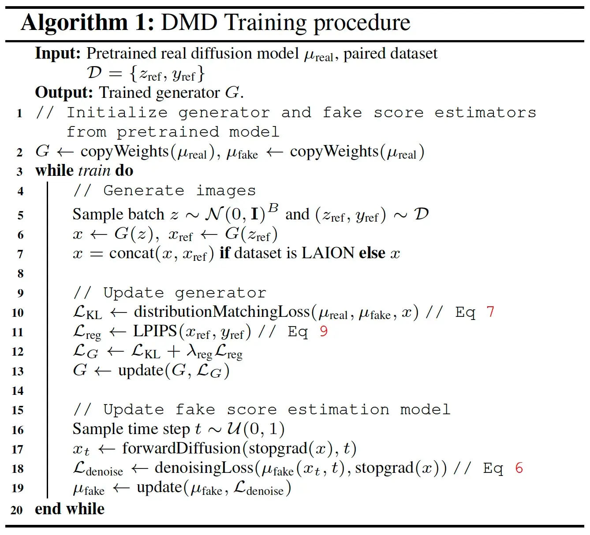
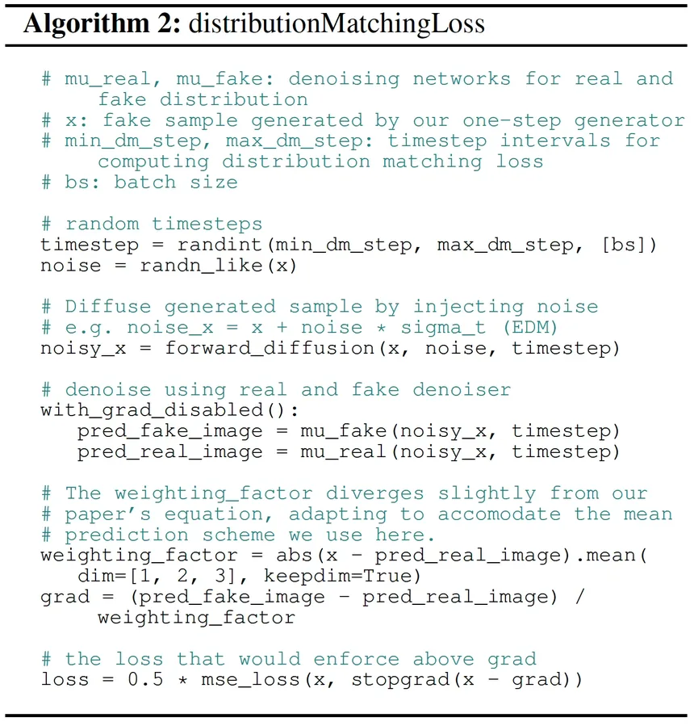
weighting_factor "diverges slightly" from Eq. 8, reading to suit a network that predicts the mean, not the noise.# Line 2: three copies of the teacher, two trainable.
generator = copy(real_unet) # G, one step
fake_unet = copy(real_unet) # mu_fake, Eq. 5
real_unet.requires_grad_(False) # mu_real, Eq. 4
min_step, max_step = int(0.02 * T), int(0.98 * T)
for _ in range(iters): # line 3
# Lines 5-7: one forward pass, no sampler loop.
z, (z_ref, y_ref) = randn(B, C, H, W), next(pairs)
latents, x_ref = generator(z), generator(z_ref)
if dataset == "laion":
latents = cat([latents, x_ref])
# Line 10 calls Alg. 2, inlined from here down.
with torch.no_grad():
t = randint(min_step, max_step + 1)
sigma = karras_sigmas[t]
noisy = latents + sigma * randn_like(latents)
# Eq. 4 is frozen; Eq. 5 is still learning.
p_real = latents - real_unet(noisy, sigma, labels)
p_fake = latents - fake_unet(noisy, sigma, labels)
# Eq. 8, and then the objective itself.
weight = p_real.abs().mean([1,2,3], keepdim=True)
grad = (p_real - p_fake) / weight
# A carrier, not a loss: differentiating it hands
# `grad` straight to the generator.
target = (latents - grad).detach()
loss_dm = 0.5 * F.mse_loss(latents, target)
# Lines 11-13.
loss = loss_dm + lambda_reg * lpips(x_ref, y_ref)
loss.backward(); opt_g.step(); opt_g.zero_grad()
# Lines 16-19: the fake score, refitted to the
# generator's own samples over the full range of t.
x = latents.detach() # no path back to G
sigma = karras_sigmas[randint(0, T)]
noisy = x + sigma * randn_like(x)
pred = fake_unet(noisy, sigma, labels)
w = snr + 1 / sigma_data**2 # Eq. 6
loss_fake = (w * (pred - x) ** 2).mean()
loss_fake.backward(); opt_fake.step()Adversarial Diffusion Distillation
Stability AI
European Conference on Computer Vision (ECCV), 2024
Nov 28, 2023 ADD (911) code (27.3K)
It first brought the adversarial loss into diffusion distillation — shipped as SDXL-Turbo — opening the GAN-assisted route that turbo-class generators still follow.
An adversarial loss keeps one-step samples sharp while score distillation keeps them true to the teacher: SDXL-Turbo, real time at one step.
Insight. Adversarial and distillation losses are complementary — sharp and faithful — and frozen pretrained features make the critic cheap.
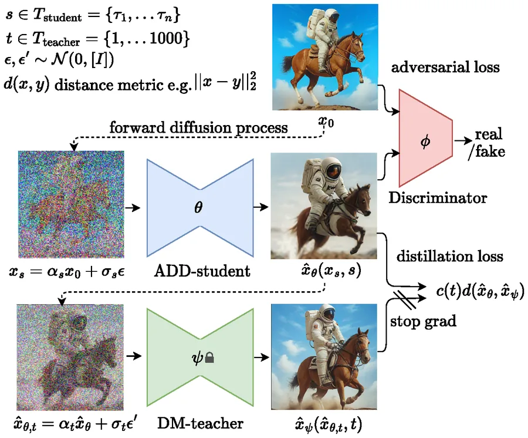
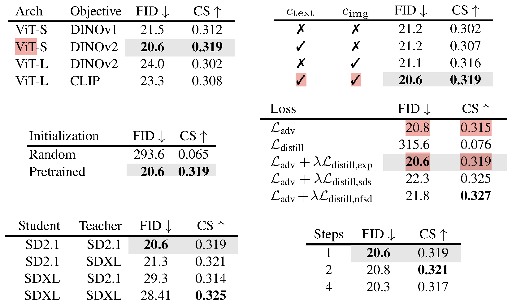
-
Three networks (§3.1). A student initialized from the pretrained UNet denoises at just timesteps with and zero terminal SNR, so the pure noise inference starts from stays in-distribution; a frozen teacher and a discriminator complete the training triangle (Fig. 1).
-
The adversarial half (§3.2). StyleGAN-T's recipe: frozen DINOv2 features, lightweight trainable heads, hinge loss with an R1 penalty on head inputs; the discriminator is projection-conditioned on the text — and, when , on the clean behind the student's noised input.
-
The distillation half (§3.3). The frozen teacher denoises a re-noised copy of the student's output — raw generations would be out-of-distribution for it — and the student regresses onto that under stopgrad: score distillation, computed in pixel space for the stabler gradients.
-
No guidance at inference (§3–4). CFG distills into the weights, cutting memory; one step beats LCM-XL and the single-step GANs, and at four steps ADD-XL outruns its own SDXL teacher in human preference — the first foundation-scale model running in real time at 512px.
-
Experiments (§4). ADD-M (SD, 860M) and ADD-XL (SDXL, 3.1B) at 512px, COCO FID-5K and CLIP for ablations, ELO from raters for the ranking: ADD-M one step 19.7 / 0.326 against InstaFlow's 22.4 and 8-step DPM's 31.7; ADD-XL beats LCM-XL at one step, SDXL at four.
-
The student inherits the teacher, not the size (Tab. 1e). SDXL student and teacher score 28.41 FID against SD2.1's 20.6 while CLIP rises 0.319 → 0.325: the student takes its teacher's traits, SDXL's being less diverse, higher quality; a random init collapses to 293.6 (1c).
InstaFlow: One Step is Enough for High-Quality Diffusion-Based Text-to-Image Generation
University of Texas at Austin · Helixon Research
International Conference on Learning Representations (ICLR), 2024
Sep 12, 2023 InstaFlow (448) code (1.4K)
Reflow Stable Diffusion on its own noise–image pairs until the flow is nearly straight, then distill the straightened flow into one step.
Insight. Distillation copies a coupling and reflow replaces it with a straighter one: a curved teacher cannot be distilled to one step however the student is tuned, and straightening it first is what let plain supervised regression yield a one-step text-to-image model at SD quality in 199 GPU-days.
-
Rectified flow, and why straight pays (§2.2, Eq. 1–4). Eq. (1), with fit by Eq. (2) on Eq. (3); Euler Eq. (4) is exact at only for a straight flow, at every .
-
Text-conditioned reflow (§2.2, Eq. 5, Alg. 1). , Eq. (5): the next flow regresses the straight line from a noise to the image the current flow draws from it; marginals kept, paths straighter, convex costs lower.
-
Text-conditioned distillation (§2.2, Eq. 6, Alg. 2). Eq. (6): one Euler step fits the whole map under , then LPIPS; orthogonal to reflow — it copies the coupling where reflow replaces it — and futile on a curved teacher.
-
Guidance as a velocity mix (Eq. 7, Fig. 9B). Eq. (7), on the reflowed teacher during distillation; sweeping from 1 to 4 raises FID-5k and CLIP together — alignment up, quality down, over-saturation past 2 — so the knob stays low.
-
Direct distillation fails (§3.2, Tab. 1, App. C.1). SD 1.4 distilled for 100k steps over a nine-point grid of learning rate and weight decay lands at 40.9 FID-5k against the teacher's 22.8; the same budget as 50k reflow plus 50k distill gives 31.0, and 20.0 against 34.6 on COCO-2014.
-
Straightening, measured (§3.2, Fig. 6). vanishes only for a straight flow; one reflow lowers by about three units, pixel paths turn near-linear, and one Euler step of 2-RF already shows a recognizable image where SD's one step is noise.
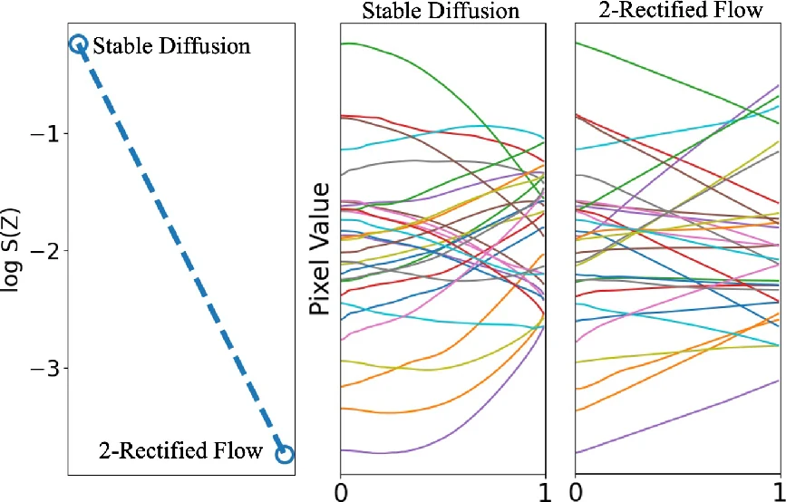
-
InstaFlow-0.9B (§4, App. D). SD 1.5 as , 25-step DPM-Solver at CFG 5.0 (6.0 over-saturates), 1.6M pairs per stage; reflow 70k steps at batch 64 then 25k at 1024, distillation 21.5k steps with then 18k with LPIPS, time pinned at : 199 A100 GPU-days in all.
-
InstaFlow-1.7B (§4, App. B). Two U-Nets in series, no weight sharing, the middle in/out blocks removed — the one deletion of five that costs nothing, 7.7% off 0.13 s — distilled from 2-RF for 39.6 GPU-days: FID-5k 22.4 in 0.12 s, the time two-step PD needs for its 26.0.
-
Few-step 2-RF (Fig. 9A). With plain Euler, 2-RF beats SD 1.5 with DPM-Solver on FID-5k and CLIP at 1, 2 and 4 steps and ties at 8; as a 25-step model it gives up little, 21.5 / 0.315 against 20.1 / 0.318 — reflow is a straightening fine-tune, not a trade of quality for speed.
-
Experiments (§3–4, Tab. 1–2). MS COCO 2017-5k by FID and CLIP and 2014-30k by FID at 256², with A100 latency: InstaFlow-0.9B 23.4 / 0.304 in 0.09 s against PD-SD's 37.2 / 0.275, and 13.10 FID-30k against StyleGAN-T's 13.90 at 0.10 s; 1.7B 22.4 and 11.83 in 0.12 s.
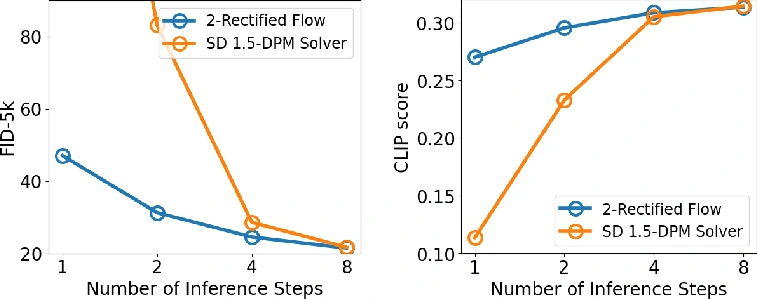
-
A third reflow stops paying (App. C.2, Tab. 4–5). 3-RF needs lr ; its 25-step FID worsens 22.1 → 23.6 while one step improves 68.3 → 37.0, and distilled it wins with the U-Net (29.3 vs 31.0) but loses with the Stacked U-Net (26.3 vs 24.6) — so InstaFlow stops at .
-
SD's ControlNets plug in unchanged (Fig. 17, 27). From the same noise and prompt the one-step models reproduce 2-RF's images, so they share its latent space, and ControlNets pretrained for SD drive one-step InstaFlow with no retraining — a fine-tune of SD stays one.
The reflow, distillation and sampling algorithm and its code. Follow Algorithm 1 and 2 of paper.
def reflow():
# 1. A prompt and a noise; the teacher is the previous flow, Stable Diffusion itself at k = 1, pairs precomputed
x_0 = randn(shape)
with no_grad():
x_1 = ode_solve(v_k, x_0, prompt, steps=25, cfg=5.0) # ODE[v_k](X_0 | T): 25-step DPM-Solver on SD 1.5
# 2. Stand on the straight line between them and regress its direction
t = rand(bs)
x_t = t * x_1 + (1 - t) * x_0
loss = (v(x_t, t, prompt) - (x_1 - x_0)).square().mean() # Eq. (5); v starts as a copy of v_k, lr 1e-6
def distill():
# 1. The pair now comes from the reflowed flow, with guidance mixed into its velocity
x_0 = randn(shape)
with no_grad():
v_cfg = lambda z, t: 1.5 * v_2(z, t, prompt) + (1 - 1.5) * v_2(z, t, null) # Eq. (7); alpha = 1.5
x_1 = ode_solve(v_cfg, x_0, steps=25)
# 2. One Euler step from pure noise, the time input pinned at 0; L2 for 21.5k steps, LPIPS for 18k more
x_hat = x_0 + v_tilde(x_0, 0, prompt) # Eq. (6); v_tilde starts from v_2's weights
loss = D(x_hat, x_1) # D = L2, then LPIPS
def sample():
# One step for InstaFlow, N Euler steps for 2-rectified flow; the released U-Net reads SD's clock, 1000 (1 - t)
x = randn(shape)
for t in linspace(0, 1, N + 1)[:-1]:
x = x + v(x, t, prompt) / N # Eq. (4)On Distillation of Guided Diffusion Models
Stanford · Stability AI · Google Research, Brain Team
Conference on Computer Vision and Pattern Recognition (CVPR), 2023
Oct 06, 2022 CFG Distill (881)
It first made classifier-free guidance distillable by conditioning the student on the guidance scale — a -embedding now standard equipment in few-step generators.
It makes classifier-free guidance distillable — fold the two-model combination into a guidance-conditioned student, then progressively distill it.
Insight. Fold two-model guidance into one student with the scale as an input, like time: one few-step model serves the quality–diversity dial.
-
Why guidance resists distillation (§2). Classifier-free guidance runs two networks per step and mixes their outputs, ; the scale is a quality–diversity knob for the user, so a student has to cover a full range of guidance strengths rather than any single point of it.
-
Stage 1 folds the pair into one network (§3.1). A student regresses onto the guided mix with , the scale entering via Fourier embedding, like timestep; weights start from the teacher's conditional half. Range-training is free — it matches fixed-scale students (Tab. 1).
-
Stage 2 is PD, carrying along (§3.2). The merged model then walks progressive distillation's ladder unchanged — halve, re-teach, repeat — with v-prediction throughout. On pixel-space ImageNet-64 it matches its 1024x2-step teacher at 8–16 steps, a speedup of up to 256x.
-
A stochastic sampler too (§3.3). One deterministic step at doubled length, then one re-noising step backward — the first study of distilling for samplers beyond deterministic DDIM, and it runs neck and neck with the deterministic variant across guidance scales (Tab. 1).

-
Experiments (§4). Pixel-space ImageNet-64 by FID / IS over , latent ImageNet-256, LAION-512, SDEdit and inpainting: ImageNet-64 at reads 2.17 at 4 steps against the teacher's 2.36 at 1024×2; LAION-512 37.3 / 26.0 at 2 / 4 steps against DPM++'s 98.8 / 34.1.
-
Metrics stop seeing it at 8 steps (§4.2.2, Fig. 7, 10). On 5000 COCO captions the distilled SD beats DDIM on FID and CLIP at 2 and 4 steps and ties at 8, while 8-step DDIM samples stay blurrier than 4 distilled ones — the paper's own admission that both metrics miss it here.
Progressive Distillation for Fast Sampling of Diffusion Models
Google Research, Brain Team
International Conference on Learning Representations (ICLR), 2022
Feb 01, 2022 PD (2,833) code
It opened the progressive route to few-step diffusion sampling, and its velocity parameterization outgrew distillation to become a standard for training diffusion models.
It halves a sampler's steps by distillation, over and over — 8192 down to 4 — introducing velocity prediction to keep few-step models stable.
Insight. Halve the steps and re-teach at logarithmic cost, pick a parameterization that survives low SNR: velocity prediction outgrew distillation.
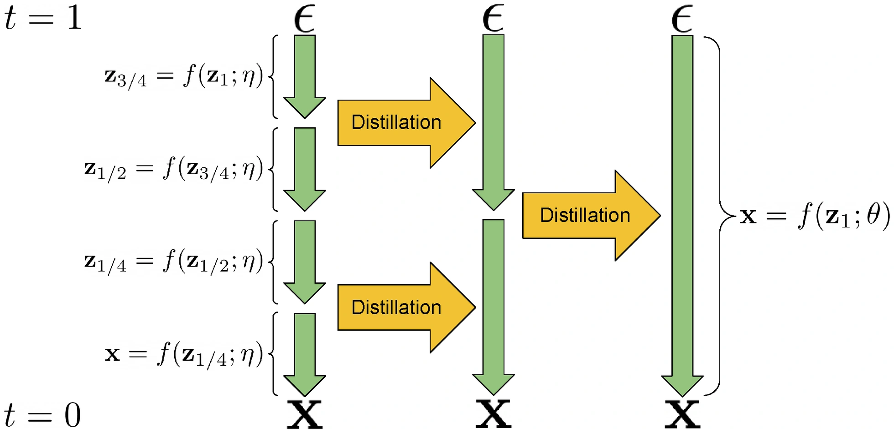
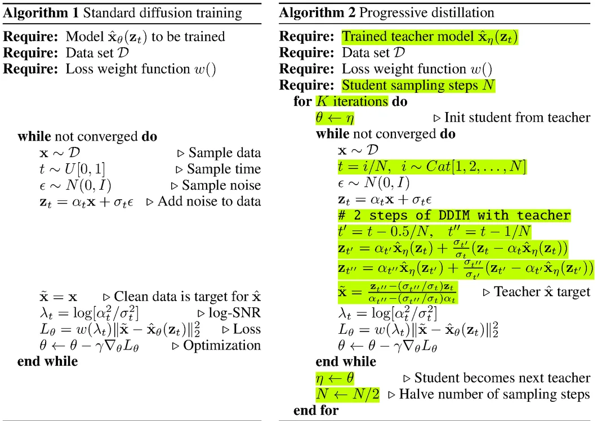
-
One student step = two teacher steps (§3, Alg. 2). The student starts as a copy of the teacher and trains like a diffusion model except for the target: from , run two teacher DDIM steps, then invert one student DDIM step to get the that reaches the same point in one jump.
-
Why the target beats real data (§3). Given the real is ambiguous — many images produce the same noisy input, so standard training regresses to a blurry average. The target is fully determined by teacher and : sharp, which lets one step do two steps' work.
-
The halving ladder (§3). When the student converges it becomes the next teacher and halves: CIFAR-10 descends 8192 to 4 at 50K updates per rung, no more than the original training cost. FID holds near-optimal to 4–8 steps — 3.00 at 4 — where DDIM needs 50 for 4.67.
-
Where noise prediction breaks (§4). Distillation pushes evaluation toward zero SNR, where divides by a vanishing ; at one step the input is pure noise, so is the input and says nothing about — and the implicit SNR loss weighting gives that regime zero weight.
-
Velocity prediction (§4, App. D). Of three stable fixes — predict ; predict and jointly; predict — the last is stablest: on the angle , a DDIM update becomes a rotation whose step size ignores SNR. New weightings ride along: truncated SNR, SNR+1.
-
Against one-shot distillation (§6). Luhman & Luhman regress a one-step student on precomputed full-length teacher runs — a cost linear in the teacher's steps. PD never runs the teacher at full length — cost logarithmic — and hits 9.12 at one step against their 9.36.
-
Experiments (§5.2). CIFAR-10, ImageNet-64, LSUN Bedroom and Church, from 8192 or 1024 steps, FID after every halving against DDIM and a stochastic sampler: near-optimal to 4–8 steps on all four, sharp loss only at 1–2; CIFAR-10 2.57 / 3.00 / 4.51 / 9.12 at 8 / 4 / 2 / 1 steps.
-
Parameterization matters less than stability (§5.1, Tab. 1). From scratch on CIFAR-10, every stable choice lands within ~0.1 FID of the rest, and -prediction edges , 2.51 against 2.75 with DDIM; is chosen for the SNR-free step size, and with truncated SNR diverges.
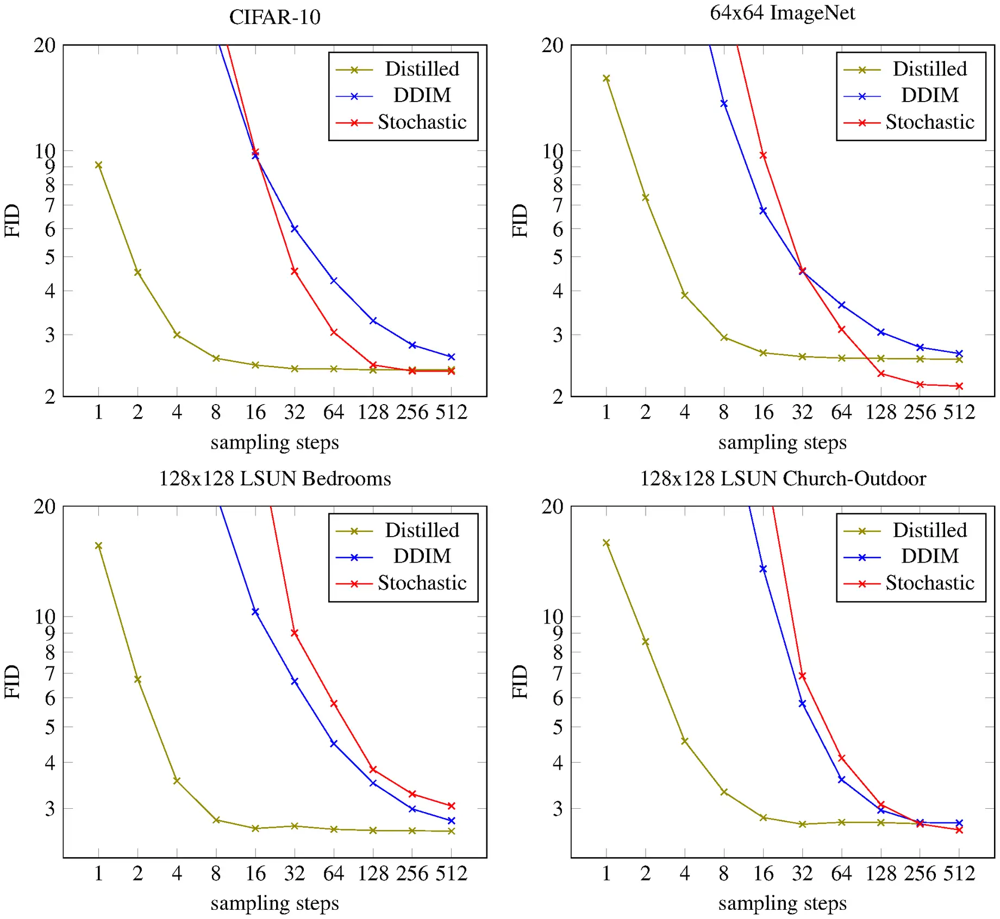
One rung of the ladder, straight from the repo, cut to the lines that carry the idea:
# One stage (dpm.py, training_losses): the student trains on real data, not synthetic pairs.
i = randint(0, N) # N = this stage's step count; distillation forces discrete times
logsnr_t, logsnr_mid, logsnr_s = sched((i+1) / N), sched((i+.5) / N), sched(i / N) # cosine
z_t = alpha(logsnr_t) * x + sigma(logsnr_t) * randn_like(x) # forward-noise a real image
# The target (Alg. 2): two teacher DDIM steps, then the x one student step must hit.
x1, eps1 = teacher(z_t, logsnr_t) # every call yields x and eps views of one output
z_mid = alpha(logsnr_mid) * x1 + sigma(logsnr_mid) * eps1
x2, eps2 = teacher(z_mid, logsnr_mid)
z_s = alpha(logsnr_s) * x2 + sigma(logsnr_s) * eps2
frac = sigma(logsnr_s) / sigma(logsnr_t)
x_target = (z_s - frac * z_t) / (alpha(logsnr_s) - frac * alpha(logsnr_t)) # never clipped
x_target = where(i == 0, x1, x_target) # bottom rung: the teacher's own prediction
# The loss (§4): v-parameterized student, truncated-SNR weighting.
v_pred = student(z_t, logsnr_t) # student starts as a weight copy of the teacher
x_pred = alpha(logsnr_t) * z_t - sigma(logsnr_t) * v_pred
x_mse = mse(x_pred, x_target)
loss = max(x_mse, snr(logsnr_t) * x_mse) # the paper's max(1, SNR), spelled max(x_mse, eps_mse)
# On convergence: teacher = student, N //= 2 - rerunning this file log2(N) times is the ladder.Knowledge Distillation in Iterative Generative Models for Improved Sampling Speed
arXiv, 2021
Jan 07, 2021 Denoising Student (418) code (30)
It distills a 100-step DDIM into a single forward pass by plain regression on the teacher's outputs, with no adversarial training anywhere.
Insight. A deterministic sampler is a function, and a function can be regressed: the first proof that a 100-step diffusion walk collapses into one forward pass — and the blur pixel regression leaves where detail is unresolved is exactly what distribution matching later had to remove by design.

-
A deterministic teacher is the precondition (§2). Distillation learns a function, and MCMC sampling is not one. Every DDIM step is fixed by its input, so the whole walk collapses into one function one network can learn — 100x faster than the teacher, 1000x than DDPM.
-
A KL that collapses to regression (§3.1, Eq. 10–11). Minimize between teacher and student conditionals ; both unit-variance Gaussians, so up to a constant it equals , their maps' outputs — MSE, no adversary, no joint training.
-
Training data is synthesized (§3.1). Draw from the prior, run the teacher (100 DDIM steps, 50 for LSUN), keep the pair — 1.024M per dataset, recycled over epochs. Every pair costs one full teacher run, so building the dataset scales linearly with the teacher's step count.
-
The student is the teacher, reused (§3.2). All the teacher's knowledge lives in one repeatedly applied network, so the student copies its architecture and weights, keeps predicting noise (subtracted from to form the sample), and is conditioned at the fixed top timestep .
-
What pixel-level replication costs (§4.1). The student must match the teacher's output down to the pixel, so unresolved detail averages to blur — 256px LSUN turns soft — and CIFAR-10's one-step 9.36 trails the 100-step teacher's 4.16, a gap distribution matching later closed.
-
Experiments (§4). CIFAR-10, CelebA-64 and LSUN Bedroom / Church by FID and IS against GANs, VAEs and EBMs: 9.36 / 8.36 on CIFAR-10, below NVAE's 51.67, far from StyleGAN2-ADA's 2.92; 10.68 on CelebA; 50K CIFAR samples in 51.5s against the teacher's 4,960s.
-
The latent survives distillation (§4.2). Spherical interpolation between two yields plausible morphs, and resizing the latent gives coherent images of a size never trained on — the student inherits the teacher's noise-to-image map and its generalization, not its samples.
The method straight from the repo, cut to the lines that carry the idea:
# Data (create_dataset.py): one (x_T, x_0) pair costs one full teacher run.
x = x_T = randn(B, res, res, 3) # start from the prior
for i, j in zip(reversed(seq), reversed([-1, *seq[:-1]])): # 100 steps quadratic; LSUN: 50 linear
eps = teacher_unet(x, i) # frozen pretrained DDPM/DDIM weights
x = sqrt(a[j]) * (x - sqrt(1 - a[i]) * eps) / sqrt(a[i]) + sqrt(1 - a[j]) * eps # eta = 0; a[-1] = 1
pairs.save(fp16(x_T), uint8(x)) # 1.024M pairs, built once, recycled every epoch
# Student (models.py): the teacher reused, pinned to the top timestep.
def student(z):
eps = teacher_unet(z, t=999) # same net, same weights, t fixed at T
return z - eps # still reads as noise prediction; one subtraction ends sampling
# Loss (training.py): Eq. 11 as plain regression on the synthesized pairs.
loss = sum((x_0 - student(x_T)) ** 2) / B # CIFAR-10 actually ships |.| here - L1, not L2Last updated on October 07, 2026 · Citations from Semantic Scholar & Google Scholar; stars from GitHub, October 2026